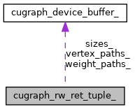

Home
libcugraph
clx
cucim
cudf
cudf-java
cugraph
cuml
cusignal
cuspatial
cuxfilter
dask-cuda
libcudf
libcugraph
libcuml
librmm
rapids-cmake
rmm
legacy (21.12)
nightly (22.04)
stable (22.02)
legacy (21.12)
Public Attributes
|
List of all members
cugraph_rw_ret_tuple_ Struct Reference
Collaboration diagram for cugraph_rw_ret_tuple_:

[
legend
]
Public Attributes
cugraph_device_buffer_t
vertex_paths_
cugraph_device_buffer_t
weight_paths_
cugraph_device_buffer_t
sizes_
The documentation for this struct was generated from the following file:
cugraph_api.h
Generated by
1.8.20